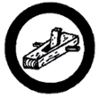

Carpentry
- Show how to sharpen an edge-cutting tool, and a tooth-cutting tool.
- Demonstrate the use of the ruler, square, level, plumb line, meter, chalk line, and bevel.
- Demonstrate the proper way to drive, set, and clinch a nail; draw a spike with a claw hammer; join two pieces of wood with screws.
- Show the correct use of the cross-cut saw, and the rip-saw.
- Show how to place the edge and the broad surface of a board.
- Demonstrate how to use a chisel by making a mortise, a lap joint, and a tenon joint.
- Without assistance, make a simple article of furniture for practical use in the home or around the yard - such as a pergola, bench, small shed, chair, table, or cabinet.
|